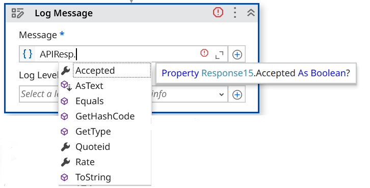

API Testing¶
What is an API?¶
An API (Application Programming Interface) is a computing interface that enables communication and data exchange between two independent software systems. It defines how requests are made, what data formats are used, and what responses to expect.
In simple terms, an API lets software components talk to each other — for example, a weather app might use an API to get data from a weather service.
What is API testing?¶
API testing verifies that APIs behave as expected. Instead of testing through the UI (clicking buttons, entering text), it interacts directly with the underlying service using requests and examines the responses.
Key aspects tested:
- Functionality — does the API do what it's supposed to?
- Reliability — is the API available and stable over time?
- Performance — how fast does the API respond?
- Security — are unauthorized users kept out?
API testing vs. GUI testing¶
| Aspect | API Testing | GUI Testing |
|---|---|---|
| Focus | Business logic layer | User interface |
| Input/Output | Structured data (JSON/XML) via software | User actions (keyboard, mouse) |
| Speed | Faster | Slower |
| Maintenance | Easier | More fragile |
API testing approach¶
A predefined strategy the QA team follows to conduct API testing once the build is ready:
To effectively test APIs, follow this approach:
- Understand the API's functionality — read the documentation, identify endpoints, methods (GET, POST, etc.), input parameters, and expected responses.
- Design test cases — using techniques such as Equivalence Partitioning, Boundary Value Analysis, and Error Guessing.
- Set input parameters — define what data each API request needs.
- Execute and validate — run the test cases, compare actual vs. expected responses, log and retest issues.
API testing in UiPath¶
API automation testing requires an application that can be interacted with via an API. Ways to interact with an API in UiPath:
- HTTP Activities — use the HTTP Request activity to send requests directly.
- Import API Definition (Swagger/OpenAPI) — bring structured API definitions into UiPath Studio.
- Import Postman Collection — use existing Postman test collections within Studio.
- Integration Service — use UiPath's pre-built connectors to work with SaaS platforms.
What is Postman?¶
Postman is a collaboration platform for API development — its features simplify each step of building an API and streamline collaboration.
Let's watch API Testing using UiPath.
Exercise 1: API Testing Using HTTP Activities¶
Create an API test case that sends HTTP requests and validates response.
In this exercise, you will create an API test case for the UiBank application. Using the UiBank API, you will automate the testing of the loan application functionality by sending HTTP requests and validating the responses returned by the service.
Explore the UiBank API home page¶
1. Navigate to the UiBank API website.
2. The UiBank API home page provides links to:
✅ Explore API — interactive API documentation.
✅ Swagger File — the OpenAPI/Swagger definition that can be imported into UiPath Studio.
3. Explore the available API endpoints and their specifications
Go to Explore API → Quote to view the available loan quote endpoints, then open the /quote/newquote endpoint and click Try it Out!

4. Copy the endpoint: https://uibank-api.uipath.com/api/quotes/newquote
5. Explore the response — there are three fields: accepted, rate, and quoteid.
Build the test case¶
Step 1. Create a new Test Case
✅ Right-click the APIs folder in the ILT project
✅ select Add → Test Case from the context menu.

Step 2. Enter the test case details
✅ In the Name field, enter a name for the test case.
✅ Leave the Location field unchanged.
✅ From the Based On dropdown, select Empty Test Case Template.
✅ Ensure Execution Template is set to <no execution template>.
✅ Click Next to proceed to the Test Data configuration step. To add test data, from Source select file, browse to the API subfolder in the project, and select the file APITestData.xlsx.
✅ Click Create to create the test case.

3. HTTP Request activity
✅ In the Activities panel, search for the HTTP Request activity.
✅ Drag and drop the activity onto the Designer canvas.

4. Configure Activity
Configure the HTTP Request activity using the values from the UiBank API documentation:
✅ Change Request method to Post.
✅ Add the Request URL copied earlier.
✅ Expand the Parameters section and add the parameter names (keys) as defined in the UiBank API documentation. For each parameter, map the corresponding test case argument as the value — the required arguments are already configured as part of this data-driven test case.
✅ Set Request body type to none.
✅ Create a variable in the output property Response content. Example: APIResp.
Tip
Create variables directly from the Properties panel instead of using the Data Manager. When a variable is created from the Properties panel, UiPath automatically assigns the appropriate data type based on the property being configured — eliminating the need to manually search for and select the correct data type from the Data Manager.
5. Deserialize the API response. The response (APIResp) is returned as an HTTPResponseSummary object.
✅ Add a Deserialize JSON activity.
✅ Set its input to APIResp.TextContent. This converts the JSON response payload into a format that can be used for validations and assertions.
✅ Create a variable in the Properties panel for capturing the output. Example: JSONObj.

6. Verify the result — you'll test whether the accepted parameter of the API response is true or false.
✅ Add a Verify Expression With Operator activity.
✅ In First Expression, add JSONObj("accepted").ToString.
✅ In Second Expression, add the argument Accepted.

7. Execute this data-driven test case from the Test Explorer.
Exercise 2: Create an API Test Using an Imported OpenAPI Definition¶
In this exercise, you will import an OpenAPI (Swagger) definition into UiPath Studio and use the generated API activities to create an automated test for the UiBank loan quote API.
Step 1. Import the API definition
✅ From the top ribbon in UiPath Studio, click New Service.

Step 2. Swagger URL
✅ Add the Swagger URL in the link field and load.
✅ Observe the namespace uibankapi created, then close the wizard.

Note
You can check/uncheck to choose the APIs you want to import.
Step 3. UiBank Activity
✅ From the Activities panel, search for uibank.
✅ All the picked endpoints are now available as activities — this makes them convenient to configure.
✅ Locate the generated activity Quote_newquote.

Step 4. New Test Case ✅ Create a new test case in the APIs folder by following the steps from the previous exercise
✅ Add APITestData.xlsx as the test data source.
✅ Drag the activity into the test case.
✅ Configure the required input parameters.

Note
The API parameters expect values of type Double, while the test case arguments are provided as String values. Use the CDbl() method to convert the string arguments before mapping them to the API parameters.
Create a variable within the activity by using Ctrl+K.
The response variable is of type Response15, which provides strongly typed access to the API response fields, including Accepted, Rate, and QuoteID. These properties can be referenced directly in verification activities without additional deserialization.
Step 5. Output
✅ Observe the output of the activity by adding a Log Message activity.

Step 6. Verify
✅ Add a Verify Expression with Operator activity to validate the API response.

Note
The Trim function removes leading and trailing spaces from the text.
Execute this data-driven test case from the Test Explorer.
Optional Exercise: API Testing Using Integration Service¶
Create a data-driven test case to validate the UiBank API's Create Loan functionality. Use the two test records provided in APITestData.xlsx, execute the API request for each record, and verify that the returned results match the expected values.
1. Search for the Insert Record activity in Studio, choosing the API connection created in the previous exercise.
2. Select object: QuotesNewquote.
3. Transform (CInt) the properties to integers.
4. Verify that the accepted property from the API response matches what's expected.
5. Log the quote rate.
6. Check the parameters specified in the API explorer.